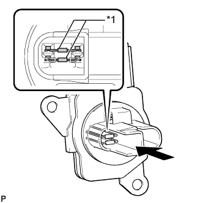

ДАТЧИК МАССОВОГО РАСХОДА ВОЗДУХА > ПРОВЕРКА |
| 1. ПРОВЕРЬТЕ РАБОТУ ДАТЧИКА МАССОВОГО РАСХОДА ВОЗДУХА |
|  |
Осмотрите платиновый проволочный элемент (подогреватель) датчика массового расхода воздуха на участках, показанных на рисунке, и убедитесь в отсутствии посторонних частиц.
| *1 | Платиновая нагреваемая проволока (подогреватель) |